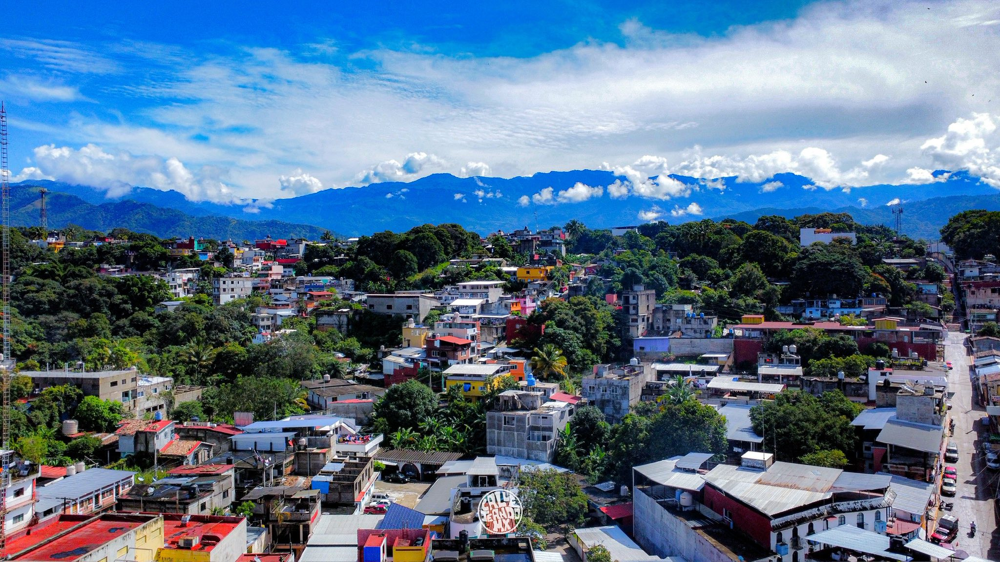
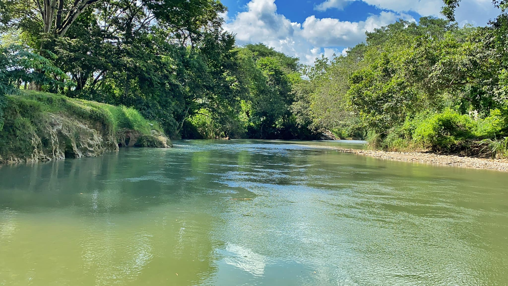

Carnaval Putleco
Una explosión de color y música que no te puedes perder cada año.
Puerta de la Costa y la Mixteca
Ubicado en la región de la Sierra Sur del estado de Oaxaca, el municipio de Putla Villa de Guerrero es un destino donde la cultura y la naturaleza convergen en un abrazo eterno. Conocido como el 'Tierra de humo o lugar donde abunda la neblina', Putla se asienta en un punto estratégico que sirve de puente entre la mística región Mixteca y la calidez de la Costa oaxaqueña. Este hermoso rincón es famoso a nivel nacional por su vibrante identidad cultural, encabezada por el espectacular Carnaval Putleco. Durante esta celebración, las calles se llenan de color con los icónicos Tiliches, sus hermosas chilenas y personajes que con sus trajes de retazos de tela representan el alma alegre e ingeniosa de nuestro pueblo. Más allá de sus fiestas, Putla cautiva con sus paisajes montañosos, su clima templado y una gastronomía que deleita a cualquier paladar, con tesoros culinarios como la masita de chivo, el tamal de chileajo y el tradicional tepache. Visitar Putla es sumergirse en un mosaico de lenguas (mixteco, triqui y náhuatl) y tradiciones que hacen de este municipio un tesoro invaluable en el corazón de Oaxaca.
Visitar Putla Villa de Guerrero es adentrarse en un universo donde la diversidad no tiene límites. Este rincón oaxaqueño es un festín para los sentidos: aquí la flora exuberante y la fauna silvestre conviven con el murmullo de ríos inagotables. Pero la riqueza de Putla va más allá de su naturaleza; se lleva en la piel con la vestimenta tradicional tejida con historia, se escucha en el alma con los sones de sus chilenas, y se celebra en el paladar con una gastronomía y bebidas artesanales que son herencia pura. Desde sus rincones más escondidos hasta sus plazas llenas de vida, Putla te ofrece un recorrido total por la esencia de México.


Haz clic abajo para descubrir un dato interesante sobre Putla.
Una explosión de color y música que no te puedes perder cada año.

Deleita tu paladar con la masita de chivo y el atole de carretón.

Visita el Templo de la Inmaculada Concepción, joya del centro histórico.